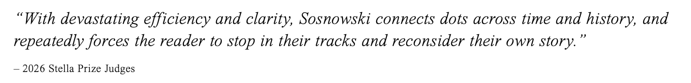
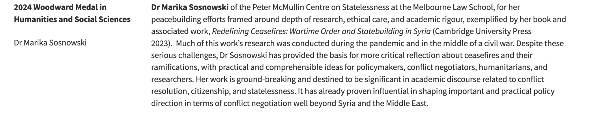

Dr Marika Sosnowski
Marika Sosnowski works as a legal anthropologist with primary research interests in the fields of armed conflict (mainly ceasefires), local/rebel governance and legal systems (particularly issues around citizenship and belonging).
From June 2023 until May 2026 she was based in the Peter McMullin Centre on Statelessness at Melbourne Law School working on an interdisciplinary project which examined the legal after-life of war and revolution. The project aims to better understand how people internalise and experience the law at an everyday level after mass violence or world-shaping events. A major output of this project was a creative non-fiction book, 58 Facets which was shortlisted for the 2026 Stella Prize and the NSW Literary Awards Douglas Stewart Prize for Non-Fiction.

Marika's academic work has been published in the Political and Legal Anthropology Review, Third World Quarterly, Citizenship Studies, International Studies Quarterly, the Leiden Journal of International Law and Civil Wars among others. Her first book Redefining Ceasefires: Wartime Order and Statebuilding in Syria came out in June 2023 with Cambridge University Press. For this book, and other associated work, she was unanimously awarded the University of Melbourne's prestigious 2024 Woodward Medal in Humanities, Arts and Social Sciences.

She has also published a range of more public-facing work including for AllegraLab, al Jumhuriya, Middle East Eye, the Lieber Institute West Point, The Conversation, The Atlantic Council and the Washington Institute.